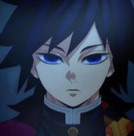
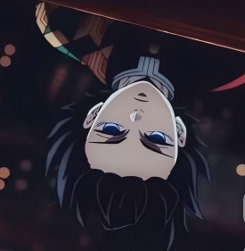
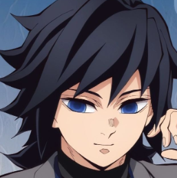
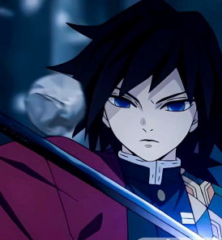

Historia

Giyu es el Pilar del Agua (Water Hashira) dentro del Cuerpo de Exterminio de Demonios. Desde pequeño sufrió mucho, su hermana se sacrificó para salvarlo. Entrenó junto a Sabito, quien murió durante la Selección Final. Giyu sobrevivió gracias a él y siempre sintió culpa. Aunque es serio y reservado, posee un gran corazón.
Habilidades y Características
🌊 Habilidades
- Respiración del Agua: Dominio total del estilo.
- Undécima forma – Calma: Técnica creada por él.
- Velocidad y reflejos: Nivel Hashira.
- Marca del Cazador: Aumento de poder.
🧊 Características
- Personalidad seria y reservada.
- Gran sentido del deber.
- Inteligente en combate.
Ficha de Giyu Tomioka
| Categoría | Información |
|---|---|
| Edad | 19 años |
| Estatura | 1.76 m |
| Peso | 69 kg |
| Primera aparición | Episodio 1 |
| Debilidades | Reservado, culpa por Sabito |
| Alias | Pilar del Agua |
Formulario de Fans
Galería





